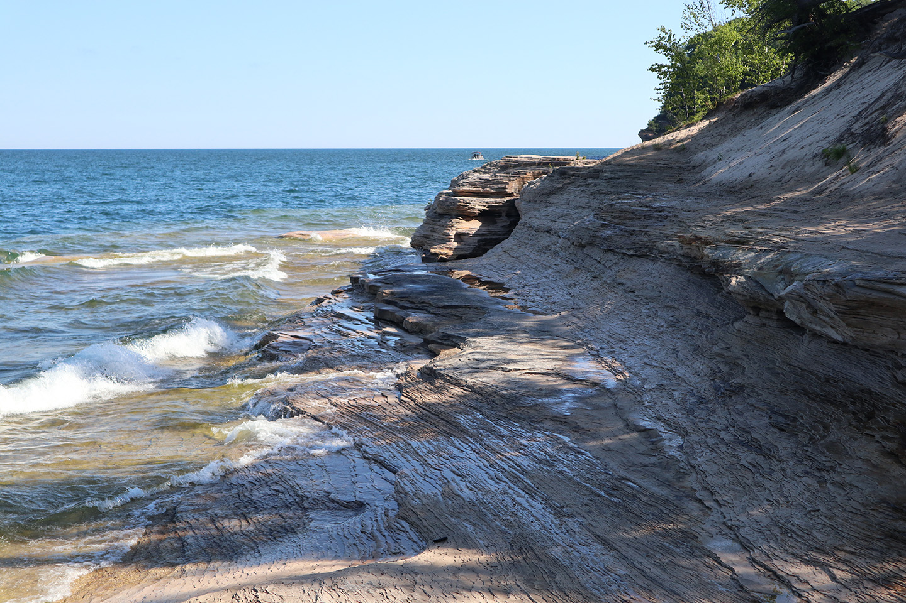
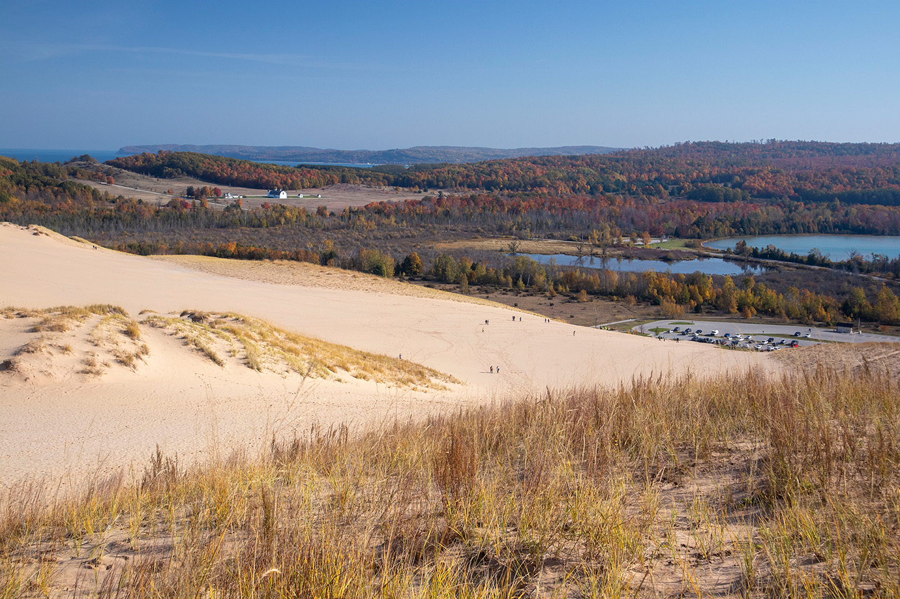
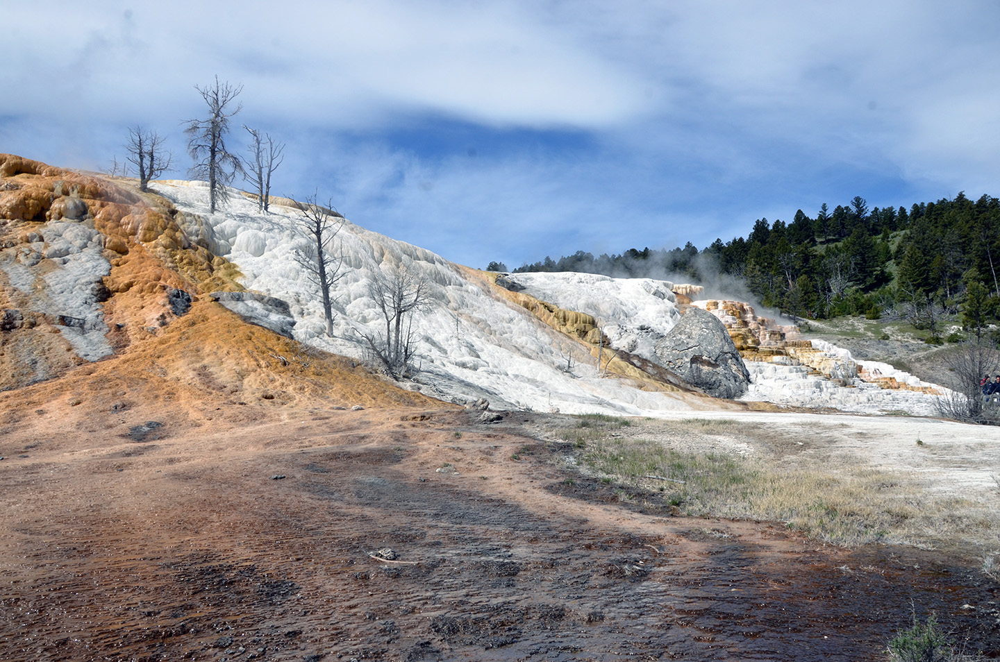
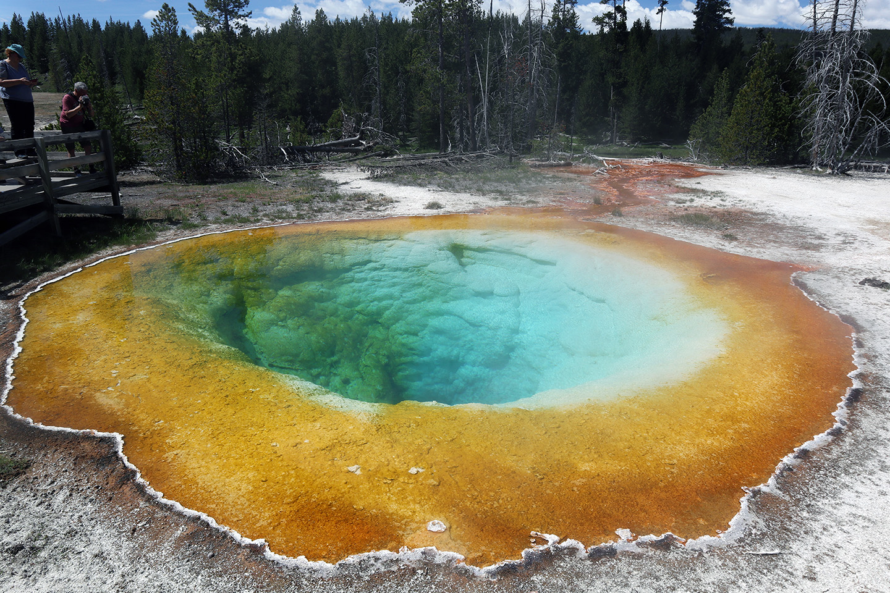
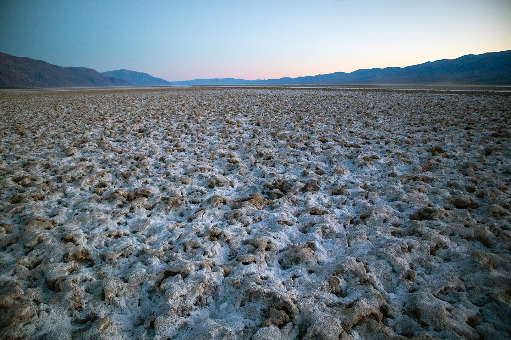
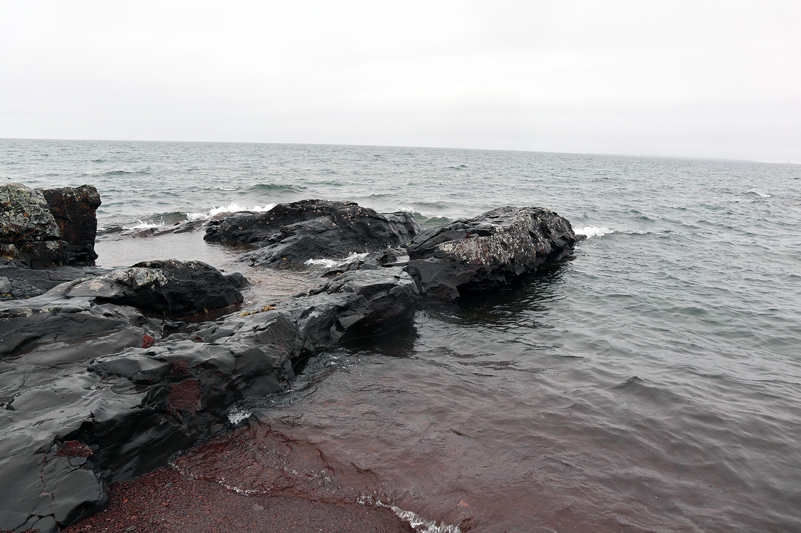
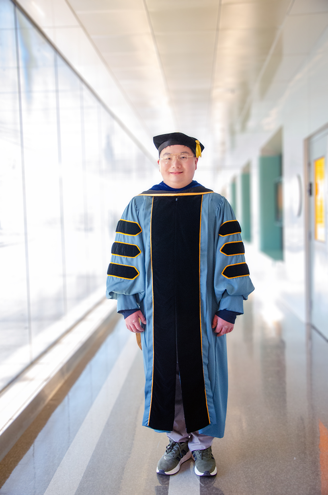
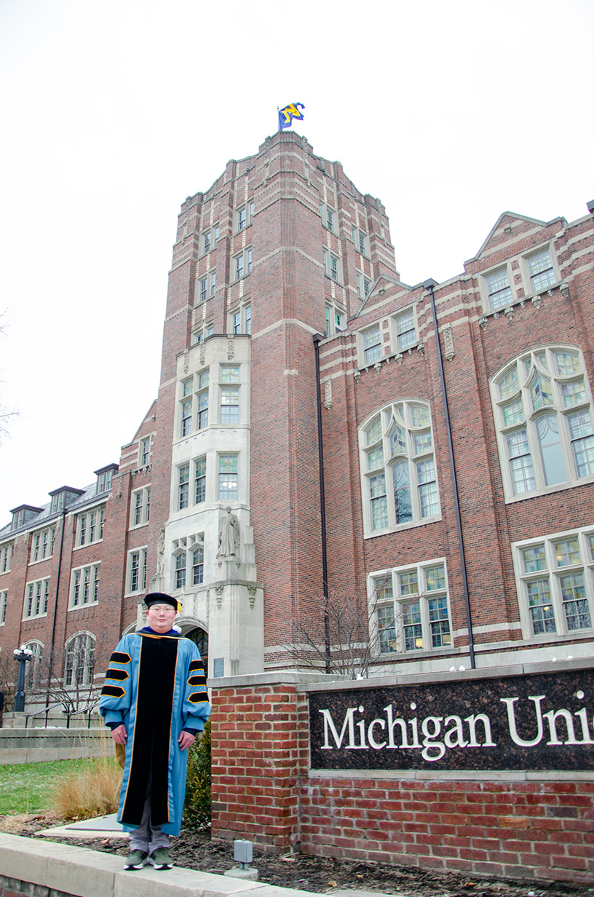
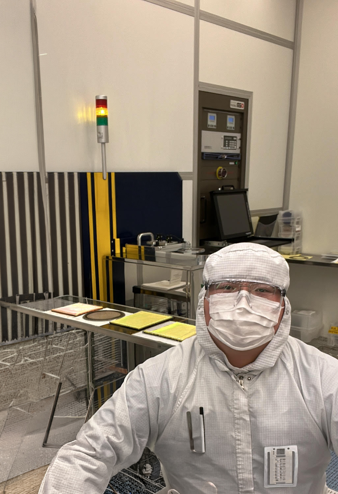
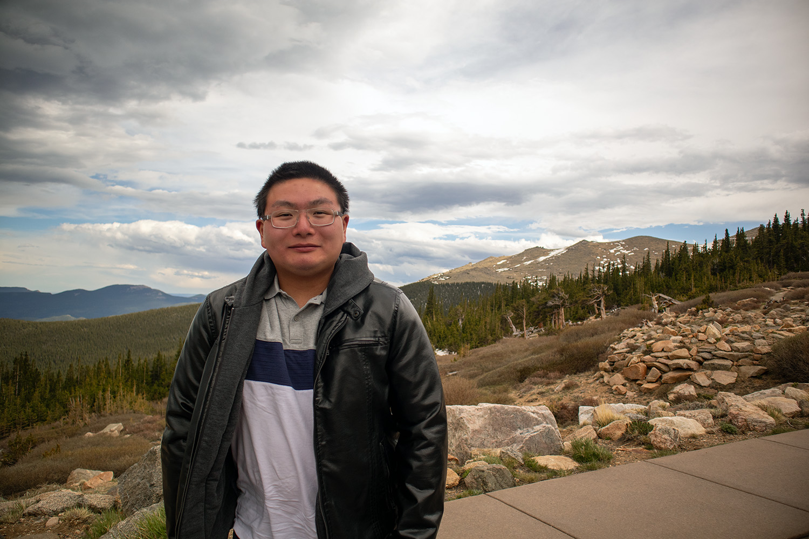

Wenhao Peng received the Ph.D. degree in electrical and computer engineering from the University of Michigan, Ann Arbor, MI, USA, in May 2026. He also received the M.S.E. degree in mechanical engineering, with a focus on dynamics and vibrations, in 2024; the M.S. degree in electrical and computer engineering, with a focus on integrated circuits and VLSI, in 2019; and two B.S.E. degrees in 2018. He is an RF acoustic wave filter engineer driving innovations from first-principles modeling through volume manufacturing, advancing bulk acoustic wave (BAW) resonator and filter technology for 5G NR, 5G FR3, 5G mm-Wave, phased-array, and radar applications. His research encompasses the development of novel device models and manufacturing processes spanning thin-film piezoelectric and ferroelectric materials, including aluminum nitride, scandium-doped aluminum nitride, and barium strontium titanate, for intrinsically switchable filters, multilayer FBARs achieving unprecedented millimeter-wave frequency scaling, and new device architectures that simplify RF frontend modules. His modeling framework uniquely bridges ferroelectric thermodynamics with acoustic wave physics, explaining the combined dielectric, elastic, and piezoelectric effects governing resonator coupling coefficients across complex multilayer stacks. He is also interested in fabrication technologies for acoustic wave devices and the integration of acoustic-wave-resonator-based filters into RF frontend modules. His contributions directly impact billions of cellular handsets, phased-array systems, and various communication platforms worldwide. He has published in IEEE TMTT, IEEE MWTL, IEEE MWCL, and Applied Physics Letters, and has presented at the IEEE International Microwave Symposium. He serves as a peer reviewer for leading IEEE and physics journals and currently functions across multidisciplinary engineering teams to improve BAW filter performance and manufacturing yield for next-generation higher-frequency operations.




Experience
Skyworks Solutions, Inc.
RF Acoustic Staff Electrical Engineer
Irvine, California, United States
Feb 2026 - Present
Electrical and Computer Engineering at the University of Michigan
Ann Arbor, Michigan, United States
Research Assistant
Sep 2019 - Dec 2025
Bulk acoustic wave resonators featuring polarization switchable functional thin film materials; funded by DARPA and NSF
Sep 2018 - Aug 2019
Reconfigurable DSP accelerator for software defined radio receivers; funded by DARPA
May 2017 - Apr 2018
Wakeup receivers; funded by Intel
Education
University of Michigan
Doctor of Philosophy, Electrical and Computer Engineering
Sep 2018 - Jan 2026
Grade: 4.00/4.00
BAW resonators featuring ferroelectric layers up to mm-Wave frequencies; design, modeling, fabrication, measurement, and characterization.
University of Michigan
Master of Science in Engineering, Mechanical Engineering
Sep 2024 - Dec 2024
Grade: 4.00/4.00
Technical Area: Dynamics and Vibrations
University of Michigan
Master of Science, Electrical and Computer Engineering
Sep 2018 - Dec 2019
Grade: 4.00/4.00
Technical Area: Integrated Circuits and VLSI
University of Michigan
Bachelor of Science in Engineering, Electrical Engineering, Summa Cum Laude
2016 - 2018
Grade: 4.00/4.00
Shanghai Jiao Tong University
Bachelor of Science in Engineering, Electrical and Computer Engineering
2014 - 2018
Academic previous experience from Shanghai
Projects
RF Acoustic Filter Technology
Feb 2026 - Present
Serve as a technical bridge across device modeling, filter design, and high-volume manufacturing, ensuring RF design translates reliably into mass-production outcomes.
Participate in resonator stack design and optimization for higher frequency cellular bands, addressing stringent performance, tunability, and manufacturability requirements.
Develop and deploy methods to accelerate mask-level acoustic response simulation, reducing design-iteration cycle time and improving predictive accuracy ahead of fabrication.
Collaborate cross-functionally with modeling, process, and production teams to align design targets with fabrication capabilities and yield objectives.
Apply equivalent-circuit and multiphysics modeling techniques to guide design decisions and troubleshoot performance across the design-to-production pipeline.
mm-Wave FBARs based on Periodically Poled AlN/ScAlN/AlN
Jan 2022 - Dec 2025
Achieved the first successful ferroelectric poling of an AlN/ScAlN/AlN trilayer stack, establishing a novel platform for switchable mm-Wave acoustic resonators.
Demonstrated unprecedented frequency scaling up to 56 GHz, advancing the state of the art in acoustic resonator performance.
Developed the first analytical framework relating acoustic field distributions to the electromechanical coupling coefficient via modal analysis and the series–parallel resonance frequency separation, enabling efficient layer stack design and optimization.
Led the full design-to-characterization workflow: modeled resonators using the Mason equivalent circuit (ADS) and multiphysics simulations (COMSOL), optimized electrode metals and layer stacks, and analyzed material intrinsic quality-factor limits.
Advanced the nanofabrication and polarization-switching processes (lithography, dry/wet/plasma etching, physical vapor deposition, and pulsed-field poling with current-response analysis).
Performed mm-Wave characterization using on-wafer de-embedding structures, GSG probes, and a VNA, with structures validated in ADS Momentum and Ansys HFSS.
Intrinsically Switchable FBARs based on BST
Sep 2019 - Dec 2021
Designed and demonstrated a switchless quad-band FBAR filter, eliminating discrete switching components through the intrinsic field-tunable response of BST.
Developed a phenomenological large-signal model coupling ferroelectric switching dynamics with the acoustic response, enabling the design and simulation of novel RF acoustic components—including a phase-inversion switch.
Designed resonators and filters using the Mason and Modified Butterworth–Van Dyke (mBVD) models in ADS, applying the image parameter method for filter synthesis.
Executed full cleanroom fabrication (oxidation, lithography, physical vapor deposition, wet/dry etching) and characterized devices via GSG probes and VNA.
Publications
S. Nam, W. Peng, P. Wang, D. Wang, Z. Mi and A. Mortazawi, "A mm-Wave Trilayer AlN/ScAlN/AlN Higher Order Mode FBAR," in IEEE Microwave and Wireless Technology Letters, vol. 33, no. 6, pp. 803-806, June 2023, doi: 10.1109/LMWT.2023.3271865.
D. Wang, P. Wang, S. Mondal, J. Liu, M. Hu, M. He, S. Nam, W. Peng, S. Yang, D. Wang, Y. Xiao, Y. Wu, A. Mortazawi, and Z. Mi, “Controlled ferroelectric switching in ultrawide bandgap aln/scaln multilayers,” Applied Physics Letters, vol. 123, no. 10, p. 103506, 09 2023, doi: 10.1063/5.0160163.
W. Peng, S. Nam, D. Wang, Z. Mi and A. Mortazawi, "A 56 GHz Trilayer AlN/ScAlN/AlN Periodically Poled FBAR," 2024 IEEE/MTT-S International Microwave Symposium - IMS 2024, Washington, DC, USA, 2024, pp. 150-153, doi: 10.1109/IMS40175.2024.10600386.
S. Nam, M. Z. Koohi, W. Peng and A. Mortazawi, "A Switchless Quad Band Filter Bank Based on Ferroelectric BST FBARs," in IEEE Microwave and Wireless Components Letters, vol. 31, no. 6, pp. 662-665, June 2021, doi: 10.1109/LMWC.2021.3069880.
M. Z. Koohi, W. Peng and A. Mortazawi, "An Intrinsically Switchable Balanced Ferroelectric FBAR Filter at 2 GHz," 2020 IEEE/MTT-S International Microwave Symposium (IMS), Los Angeles, CA, USA, 2020, pp. 131-134, doi: 10.1109/IMS30576.2020.9223799.
W. Peng, M. Z. Koohi, S. Nam and A. Mortazawi, "Phenomenological Circuit Modeling of Ferroelectric-Driven Bulk Acoustic Wave Resonators," in IEEE Transactions on Microwave Theory and Techniques, vol. 70, no. 1, pp. 919-925, Jan. 2022, doi: 10.1109/TMTT.2021.3130609.
H. Desai, W. Peng and A. Mortazawi, "Single-Pole Single-Throw RF Acoustic Phase Inversion Switch Leveraging Poled Ferroelectrics," in IEEE Transactions on Microwave Theory and Techniques, vol. 73, no. 1, pp. 6-13, Jan. 2025, doi: 10.1109/TMTT.2024.3496665.
W. Peng, M. Z. Koohi, S. Nam and A. Mortazawi, "Physics Based Modeling of Electrostriction Based BAW Resonators," 2021 IEEE MTT-S International Microwave Symposium (IMS), Atlanta, GA, USA, 2021, pp. 214-217, doi: 10.1109/IMS19712.2021.9574949.
Y. Dai, W. Peng, Y. Wang, L.-X. Chuo, K. Suri, H. Zheng, D. Wentzloff, H.-S. Kim, "Implementation and Evaluation of Bi-Directional WiFi Back-channel Communication," 2018 IEEE 29th Annual International Symposium on Personal, Indoor and Mobile Radio Communications (PIMRC), Bologna, Italy, 2018, pp. 1-7, doi: 10.1109/PIMRC.2018.8580736.
W. Peng, S. Nam, D. Wang, Z. Mi and A. Mortazawi, "A 36 GHz Trilayer AlN/ScAlN/AlN Periodically Poled FBAR," 2025 IEEE/MTT-S International Microwave Symposium - IMS 2025, San Francisco, CA, USA, 2025, pp. 786-789, doi: 10.1109/IMS40360.2025.11103989.
W. Peng, "Layered Ferroelectric Millimeter-Wave BAW Resonators: Modeling and Validation based on On-Wafer Characterization," PhD Dissertation, The University of Michigan, 2026.
W. Peng, "Electrode Effects in mmWave Frequency Multilayer Bulk Acoustic Wave Resonators," TechRxiv, 2023. DOI: https://doi.org/10.36227/techrxiv.21936552.v3
Courses
Advanced Engineering Acoustics
MECHENG 524
Advanced Lasers and Optics Laboratory
Ve 438
Advanced Solid State Microwave Circuits
EECS 525
Advanced Vibrations of Structures
MECHENG 641
Analog Integrated Circuits
EECS 522
Computer Architecture
EECS 470
Data Structures and Algorithms
EECS 281
DSP Design Laboratory
EECS 452
Digital Communication Signals and Systems
EECS 455
Electromagnetics Theory I
EECS 530
Engineering Acoustics
MECHENG 424
Introduction to Cryptography
Ve 475
Introduction to MEMS
EECS 414
Math for Robotics
ROB 501
Mathematical Methods in Mechanical Engineering
MECHENG 501
Mechanical Vibrations
MECHENG 541
Microwave Circuits I
EECS 411
Modern Physics
Vp 390
Monolithic Amplifier Circuits
EECS 413
Probabilistic Methods in Engineering
Ve 401
Theory of Solid Continua
MECHENG 511
VLSI Design I
EECS 427
VLSI Design II
EECS 627
Wave Propagation in Elastic Solids
MECHENG 645
Peer Review Contributions
IEEE Electron Device Letters: 4
IEEE Journal of Microelectromechanical Systems: 6
IEEE Journal of Microwaves: 1
IEEE Microwave and Wireless Technology Letters: 6
Micromachines: 6
Microwave: 2
Photonics: 2
Physical Review Applied: 2
Physical Review B: 1
Physical Review Letters: 5
Physical Review Materials: 2
Progress in Quantum Electronics: 1
Links
IEEE
LinkedIn
ORCID
Google Scholar
Scopus
Web of Science
Researchgate